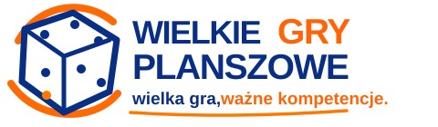

Przed poprawką
Zachowany wcześniejszy układ — do porównania zdjęcia i listy.
Otwórz ten widok
Wróć na stronęLokalne propozycje · telefon
Porównaj wcześniejszy widok z poprawioną listą i dwoma nowymi układami. Każdy podgląd można przewijać; przyciski prowadzą do tych samych gier.
Zachowany wcześniejszy układ — do porównania zdjęcia i listy.
Otwórz ten widokDotychczasowe, wygodne karty. Zdjęcie kończy się w nagłówku.
Otwórz ten widokOsobne zdjęcie nad listą i po dwie karty w rzędzie.
Otwórz ten widokWiększa fotografia gry i przewijanie kart w poziomie.
Otwórz ten widokTo osobne podglądy. Propozycje A i B nie zastępują aktualnych podstron.